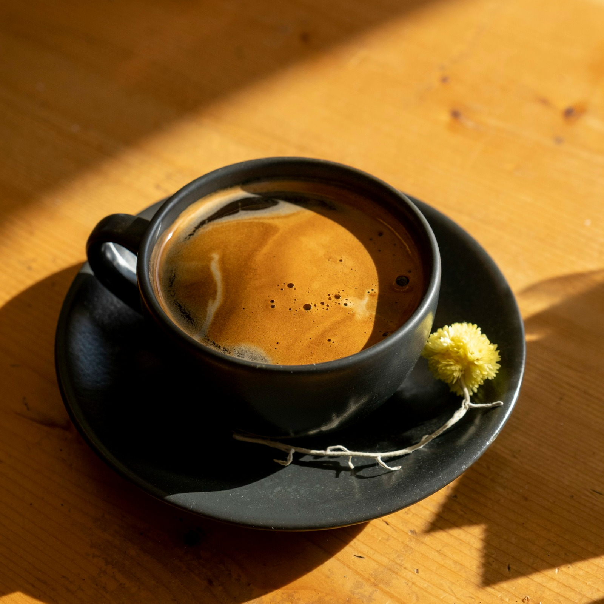

| Americano | Macchiato | Espresso |
|---|---|---|
|  | ||
| Capuccino | Latte | Mocha |
|
|
|
Americano:Espresso diluted with hot water to create a lighter coffee. |
Once the espresso is ready, pour it into a cup. Boil water and then add the hot water to the espresso, The common ratio is 1:1 or 1:2 (one part espresso to one or two parts water) depending on how strong you want your coffee. You can stir the coffee a bit to mix the ingredients,Optionally, you can add sugar or milk according to your taste. | |
Macchiato:Espresso with just a small amount of steamed milk, typically served in a small glass. |
Prepare the espresso using the espresso machine, and put a very small amount of p evaporator milk or milk foam on top of the espresso. | |
Espresso:Brewed by forcing hot water through finely ground coffee using an espresso machine. |
use the espresso machine,put the ground coffee in the filter(7-9 grams),press the coffee well with the plunger,Turn on the machine, where the hot water is pushed under high pressure through the coffee. | |
Capuccino:Made by combining espresso with steamed milk and topping it with milk foam. |
Prepare the espresso using the espresso machine,Heat the milk using a milk vaporiser until it turns into a thick foam,and pour the espresso into aglass, and add the vaporised milk ,then apply the foam to the face. | |
Latte:Similar to cappuccino but with more steamed milk and less foam. |
Prepare the espresso using the espresso machine,Heat the milk vaporiser until it is warm with a little foam,pour the evaporised milk over the espresso slowly to create abalance between coffee and milk. | |
Mocha:Made by combining espresso, steamed milk, and chocolate syrup |
Prepare the espresso using the espresso machine,Add liquid chocolate to the espresso and mix it well,Heat the milk and add it to the mix true ,and you can add whippeed cream on the face as desired. |